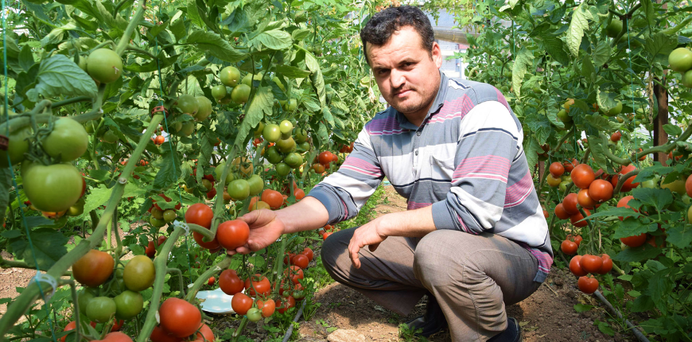
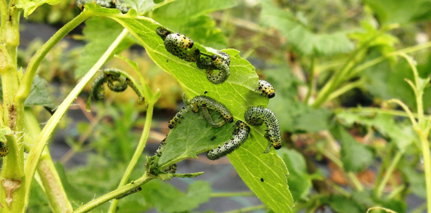

Κάτοικος Ελλάδας έσωσε τον κήπο του από την εισβολή των εντόμων - παράσιτα χωρίς χημικά
Όπως λένε μερικοί κηπουροί, η τελική σοδειά είναι αυτό που δεν κατάφεραν να καταστρέψουν τα παράσιτα και τα έντομα. Ωστόσο, τα τελευταία χρόνια, έχουν καταπολεμηθεί πολλές ασθένειες. Αλλά με φυτοπροστατευτικά προϊόντα από τα παράσιτα η εικόνα δεν έχει ξεκαθαρίσει ακόμη. Παρά το ισχυρό ‘’οπλοστάσιο’’, ο αριθμός των παρασίτων φαίνεται να έχει αυξηθεί και τα ίδια τα φάρμακα είναι συχνά επικίνδυνα για το ίδιο τον άνθρωπο.
Υπάρχει όμως μια εναλλακτική λύση σε αυτά τα φάρμακα;

Οι συντάκτες του KIPOS GREECE πήραν συνέντευξη από τον κηπουρό κύριο Δημήτρη Θεοδώρου, ο οποίος κατάφερε να σώσει τον κήπο του από παράσιτα χωρίς τη χρήση χημικών.
KIPOS GREECE:
Γεια σας, κύριε Θεοδώρου. Πείτε μας τι συνέβη με τον κήπο σας?
Δημήτριος Θεοδώρου:
Γεια σας. Την περασμένη Παρασκευή, ο κήπος στο εξοχικό μου ήταν πράσινο και ανθισμένο. Και όταν ήρθα από την πόλη την Κυριακή, δεν μπορούσα να πιστέψω στα μάτια μου: οι κάμπιες ήταν παντού, στα παράθυρα, στις πόρτες, στα φυτά, στην αυλή... Δεν είχα δει ποτέ κάτι παρόμοιο στη ζωή μου, αν και είμαι βιολόγος εκπαιδευτικός. Το σπίτι μας με το οικόπεδο που καλλιεργώ βρίσκετε στην άκρη του χωριού, δίπλα στα χωράφια, μετά από μερικές ημέρες οι κάμπιες έφτασαν μέχρι τους γείτονες.

KIPOS GREECE:
Πώς κατορθώσατε να καταπολεμήσετε τόσες πολλές κάμπιες χωρίς τη βοήθεια των χημικών?
Δημήτριος Θεοδώρου:
Χρησιμοποίησα το Insect stop, είναι απολύτως φυσικό και πολύ αποτελεσματικό με πολλών ειδών παράσιτα και έντομα από ότι των χημικών φυτοφάρμακων και παροιμιών προϊόντων, τα οποία είναι επίσης επικίνδυνα και για τους ανθρώπους και για τα κατοικίδια ζώα.
KIPOS GREECE:
Είστε λάτρεις φιλικών προς το περιβάλλον προϊόντων και χωρίς "χημικές ουσίες" και ποτέ δεν τις χρησιμοποιήσατε στον κήπο σας?
Δημήτριος Θεοδώρου:
Ναι, έτσι ακριβώς, αλλά μέχρι πρόσφατα οι συζητήσεις για την ανάπτυξη φιλικών προς το περιβάλλον προϊόντων χωρίς "χημικές ουσίες" ήτανε μόνο λόγια: δεν υπήρχαν πρακτικά εναλλακτικές λύσεις για τα φυτοφάρμακα για την καταπολέμηση των παρασίτων. Και μόνο τώρα οι Έλληνες ερασιτέχνες κηπουροί έλαβαν ένα αληθινά αξιόπιστο φάρμακο για τον κήπο όχι χημικής αλλά και οικολογικής προέλευσης. Οι Γερμανοί βιολόγοι έχουν δημιουργήσει ένα βιολογικό σκεύασμα νέας γενιάς, το οποίο ξεπερνάει πολλές χημικές ουσίες στην αξιοπιστία της προστασίας του κήπου από τα παράσιτα και από τα έντομα και ταυτόχρονα είναι απολύτως αβλαβές για τους ανθρώπους, τα ζώα και ακόμη και τους γαιοσκώληκες. Σκοτώνει περισσότερα από 200 είδη παρασίτων και εντόμων.
KIPOS GREECE:
Πώς λειτουργεί το σκεύασμα?
Δημήτριος Θεοδώρου:
Το σκεύασμα παρασκευάστηκε από ειδικούς μικροσκοπικούς μύκητες που ζουν στο έδαφος. Βρέθηκαν για πρώτη φορά το 1979 από ξένους βιολόγους - ερευνητές των αμερικανικών ινστιτούτων που είχαν δείγματα εδάφους όπως στην Ταϊλάνδη. Αυτοί οι μικροοργανισμοί παράγουν συγκεκριμένες φυσικές ενώσεις που έχουν επιλεκτική επίδραση στους απρόσκλητους "επισκέπτες". Οι ουσίες αυτές δεν έχουν αρνητικές επιπτώσεις στο ανθρώπινο σώμα. Οι περαιτέρω επεξεργασίες για τη δημιουργία του σκευάσματος γίνονταν με διάφορους τρόπους. Στις Ηνωμένες Πολιτείες, τα φάρμακα άρχισαν να παράγονται από ημισυνθετικές ουσίες. Και μια ομάδα Γερμανών βιολόγων δημιούργησε ένα σκεύασμα αποκλειστικά φυσικό, δηλαδή καθαρά βιολογικό, απαράμιλλο σε βιολογική αποτελεσματικότητα και ένα σύνολο υγειονομικών και περιβαλλοντικών πλεονεκτημάτων.
KIPOS GREECE:
Γνωρίζετε αν Insect stop πέρασε τους απαραίτητους ελέγχους για την εισαγωγή στην ελληνική αγορά? Ή εγκρίθηκε από τον Εθνικό Οργανισμό Φαρμάκων?
Δημήτριος Θεοδώρου: Ναι, έχει ήδη περάσει τις απαραίτητες επιστημονικές, βιομηχανικές και ιατρικές εξετάσεις και συνιστάται για την καταπολέμηση πολλών παρασίτων: τσιμπούρια, αφίδες, σκώροι, κάμπιες, κρεμμυδοφάγοι, ακρίδες, γρύλοι και πολλά άλλα.
KIPOS GREECE: Πόσο καιρό χρησιμοποιείτε αυτό το σκεύασμα?
Δημήτριος Θεοδώρου: Έμαθα γι 'αυτό πριν από ένα χρόνο. Για πολλά χρόνια δεν μπορούσα να απαλλαγώ από τους άκαρι αράχνης στο θερμοκήπιο μου, αν και προσπάθησα με πολλούς τρόπους. Και πέρυσι, ο πρώην συνάδελφός μου με συμβούλεψε για αυτό το σκεύασμα. Και το Insect stop ήταν σε θέση να αντιμετωπίσει αυτή τη μάστιγα μια για πάντα. Ήταν εξίσου αποτελεσματικό για την καταπολέμηση παρασίτων των φυτών στους εσωτερικούς χώρους.
KIPOS GREECE:
Πως έγινε και οι κάμπιες εξαπλωθήκαν στον κήπο σας?
Δημήτριος Θεοδώρου: Φέτος δεν είχα χρόνο να ασχοληθώ με τον κήπο, η άνοιξη ήρθε νωρίς, έτσι ήρθαν και οι κάμπιες, αλλά την επόμενη μέρα μετά την επεξεργασία με το σκεύασμα δεν υπήρχε ούτε μια κάμπια.
Δημήτριος Θεοδώρου: Θα πρέπει να σημειώσουμε επίσης την επίδραση του βιολογικού σκευάσματος στους κρεμμυδοφάγους. Ψεκάζετε δύο φορές με το Insect stop και οι ντομάτες θα είναι υγιείς (φυσικά, όταν τα σκαθάρια πετούν από γειτονικά οικόπεδα, πρέπει να επαναλάβετε τον ψεκασμό). Αυτό το φάρμακο "εισχωρεί" ακόμη και βαθιά στο έδαφος.
KIPOS GREECE: Κύριε Θεοδώρου, μιας και το αναφέρατε, πόσο συχνά χρησιμοποιείτε το φάρμακο?
Δημήτριος Θεοδώρου: Οι μέθοδοι επεξεργασίας με το Insect stop των λαχανικών και φυτών είναι παραδοσιακές: ψεκασμός ή απλή βύθιση των μολυσμένων κλαδιών σε ένα κουβά με το σκεύασμα. Τα παράσιτα που βγαίνουν από την γη δεν ανεβαίνουν στα φυτά και χάνουν την ικανότητά να μετακινούνται ύστερα από 6-8 ώρες μετά του ψεκασμού και τα αρθρόποδα έντομα μετά από 12-16 ώρες. Η πλήρης εξαφάνισή τους θα είναι μετά από 1 έως 2 ημέρες. Η επίδραση του φαρμάκου στην επιφάνεια του φύλλου διαρκεί έως και δύο εβδομάδες.
KIPOS GREECE: Και από πού μπορούμε να παραγγείλουμε αυτό το σκεύασμα?
Δημήτριος Θεοδώρου: Μπορείτε να το παραγγείλετε από την επίσημη ιστοσελίδα, η οποία λειτουργεί μόνο με πρωτότυπα προϊόντα, παρέχει εκπτώσεις και προσιτή τιμή. Επιπλέον, αγοράζοντας το Insect stop σε αυτήν την ιστοσελίδα, θα προστατεύσετε τον εαυτό σας από τους απατεώνες, που συχνά πωλούν προϊόντα χαμηλής ποιότητας.
ΠΑΡΑΓΓΕΛΙΑ
Σχόλια (42)
Παρήγγειλα να το δοκιμάσω πριν από 2 εβδομάδες, τα τριαντάφυλλα μου τα κατέστρεψαν οι αφίδες και τίποτα δεν βοήθησε, 6 ώρες μετά την επεξεργασία του κήπου, δεν έμεινε καμία τους ζωντανή...
Δημοσίευση σχολίουΧριστίνα και πως είναι τώρα, δεν εμφανίστηκαν ξανά?
Δημοσίευση σχολίουΔέσποινα,όχι, τα τριαντάφυλλα είναι υπέροχα
Δημοσίευση σχολίουΑν βοηθούσαν και αυτά τα φυτοφάρμακα! Πολεμάω με τα μυρμήγκια από τη στιγμή που αγόρασα το σπίτι, και ακόμα δεν έχουν φύγει. Όχι μόνο καταστρέφουν τα λουλούδια, αλλά τώρα ανεβαίνουν στο σπίτι. Θα παραγγείλω το Insect Stop, ίσως θα βοηθήσει
Δημοσίευση σχολίουΠοιος το έχει ήδη χρησιμοποιήσει, πόσο καιρό κρατάει?
Δημοσίευση σχολίουΉρα, έχω κήπο 400 τ.μ., δύο συσκευασίες ήταν αρκετές για να επεξεργαστείτε ολόκληρο το οικόπεδο.
Δημοσίευση σχολίουΓια να δουλέψει, πρέπει να το παραγγείλετε στην επίσημη ιστοσελίδα, εγώ το παρήγγειλα σε κάποια άσχετη ιστόσελίδα, η μυρωδιά είναι απέσια και 2 φορές πιο ακριβό, το πέταξα και παρήγγειλα απο την κανονική ιστοσελίδα.
Δημοσίευση σχολίουΣας ευχαριστώ, θα ξέρω πού να παραγγείλω, έτσι ώστε να μην χάσω τα χρήματα μου!
Δημοσίευση σχολίουΩ, τι υπέροχο, πλέον δεν θα μου τρώει κάνενα παράσιτο τις ντομάτες, αλλά δεν θέλω να τις επεξεργαστώ με χημικές ουσίες γι'αυτο θα το παραγγείλω αμέσως.
Δημοφιλή άρθραПαραγγείλτε το και δεν θα το μετανιώσετε
Δημοσίευση σχολίου